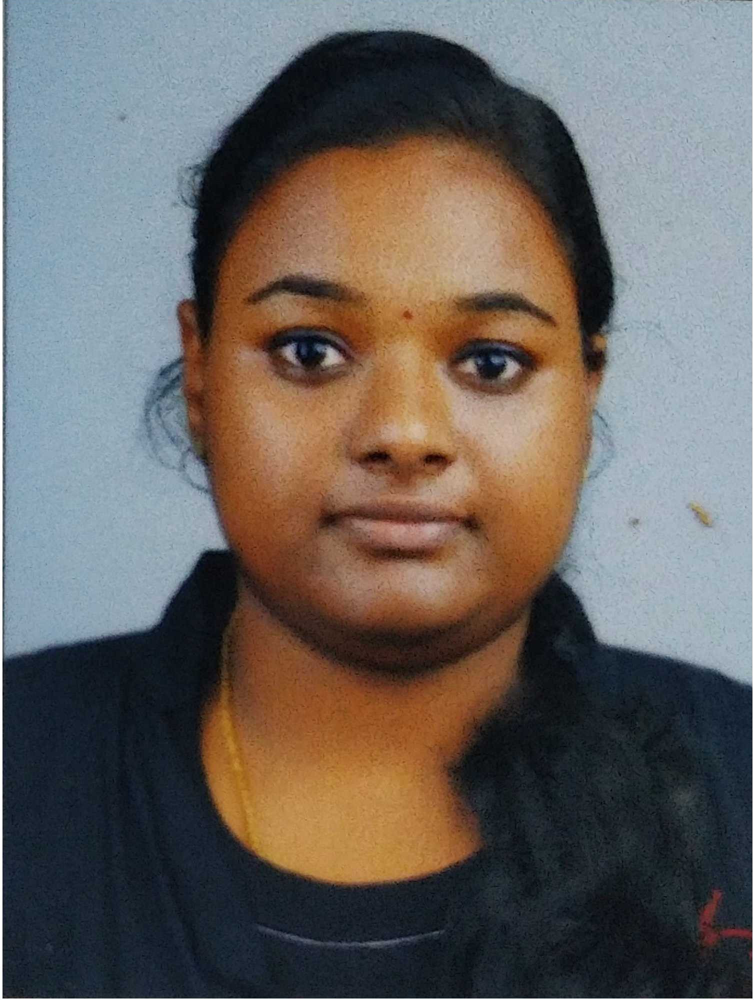

Athira ManiyanPullimoottil House | Kaitha South | Chettikulangara P.O. | Mavelikara | Alappuzha | Pin: 690106 9207576206 | athira.maniyan81@gmail.com |
 |
CAREER OBJECTIVE |
PERSONAL INFORMATION |
|
To work in an organization where my talents will be optimally utilized and further enhances my growth profile by being a hard worker and an innovative employee and a team player. STRENGTHS AND SKILLS
|
Father's Name : Maniyan R. Mother's Name : Ajitha Maniyan Date of Birth : 09/06/1998 Nationality : Indian Martial Status : Unmarried |
EDUCATION
ACHIEVEMENTS AND EXTRA CURRICULAR ACTIVITIES |
LANGUAGES KNOWNPROJECTSDigital Menu Card and Ordering Sytem for Restrauants Using QR Code Scanning: An entirely new system to handle the ordering systems inside an hotel or restaurants. This project offers an efficient ordering system for the hotels and restaurants. Our Online Restaurants Menu Card System helps you to Streamline your operations to meet customers expectations. A flexible restaurant manage system which helps you to be more systematic and quick in your services to customers. Its fast and time management system for customers and as well as the hotel management. |
INTERNSHIPS
TECHNICAL SKILLS |
SEMINARTheoretical Assessment of Cervical Cancer Using Machine Learning Methods Based on Pap-Smear Test: Among all the gynecological cancers, cervical cancer can be regarded as the second most prevalent cancer type in less developed areas. Nowadays, one important screening method in the early diagnosis of this type of cancer is the Pap-Smear test and among all the methods, the Pap test is the one which is extensively applied in cervical cancer diagnosis. Machine Learning has the potential to provide accurate prognosis by conducting classification, prediction and estimation based on the images. The purpose of the current research is to classify Pap-Smear images by different Machine Algorithm Methods to achieve high prediction rate. The Ensemble technique combines different machine learning techniques: K-Nearest Neighbor, Support Vector Machine, and Multi-Layer Perceptron. The last mentioned technique achieved the highest accuracy of 97.83%. In sum, machine learning has the potential to achieve high diagnosis accuracy, in an efficient manner. HOBBIES |
|
Content Writing | Doodling | Blogging | Cooking
REFERENCEAnchal J Vattakunnel Assitant Professor (M.Tech) College of Engineering Poonjar Email: anchaljacob@gmail.com Contact No: 9447395515 |